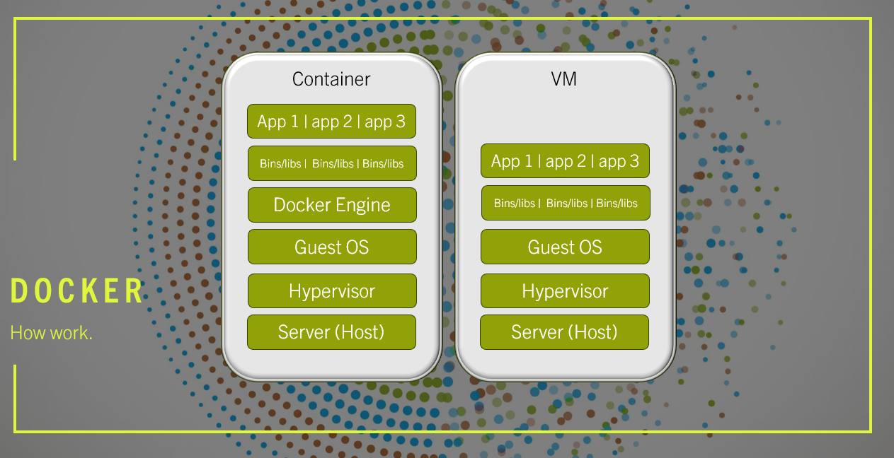

Jenkins

Docker is a platform that allows you to createm test and deploy applications quickly and efficiently. It utilizes containerization technology to package an application and all its dependencies into a standardized unit called a container.
These containers are isolated and lightweigth, ensuring consistency across various environments, making it easier to deploy and run application seamlessly on different systems.
Docker is a game-changer in the world of software development and deployment. By utilizing multiple threads of processing, it can effectively manage and destribute containers accross different systems, optimizing resource utilization and enhancing overall performance. Moreover, Docker's support
for orchestration tools like Kubernetes enables seamless scaling and management of containers in large-scale production environments. This distributed approach ensures high availability and fault tolerance, making it an ideal choice for modern, containerized applications.
Getting Started with Docker
Docker works by providing a standard way to run your code. Docker is an operating system for containers. Similar to how a virtual machine vitualizes (removes the need to directly manage) server hardware, containers virtualize the operating system of a server. Docker is installed on each server and provides
simple commands you can use to build, start or stop containers.

Using Docker lets you ship code faster, standardize application operations, seamlesslu move code and save money by improving resource utilization. With Docker, you get a single object that can reliably run anywhere. Docker's simple and straightforward syntax gives you full control. Wide adoption means there's a robust ecosystem of tools and off-the-shelf applications that are ready to use with Docker.
You can use Docker containers as a core building block creating modern applications and platforms. Docker makes it easy to build and run distributed microservices architectures, deploy your coude with standardized continuous integration and delivery pipelines, build highly-scalable data processing systems, and create fully-managed
platforms for your developers.
Build and scale distributed application architectures by taking advantage of standardized code deployments using Docker containers.
Accelerate application delivery by standardizing environments and removing conflicts between language stacks and versions.
Provide big data processing as a service. Package data and analytics packages into portable containers that can be executed by non-technical users.
Build and ship distributed applications with content and infrastructure that is IT-managed and secured.
Docker provides straightforward installation procedures for different operating systems, making it accessible to developers across various platforms. Here's a brief overview of the installation steps for popular operating systems:
Script - Install Docker Engine.
#!/bin/bash
# Run the following command to uninstall all conflicting packages
for pkg in docker.io docker-doc docker-compose podman-docker containerd runc; do sudo apt-get remove $pkg; done
# Set up repository
sudo apt-get update
sudo apt-get install ca-certificates curl gnupg
# Add Docker's official GPG key
sudo install -m 0755 -d /etc/apt/keyrings
curl -fsSL https://download.docker.com/linux/ubuntu/gpg | sudo gpg --dearmor -o /etc/apt/keyrings/docker.gpg
sudo chmod a+r /etc/apt/keyrings/docker.gpg
# set up the repository
echo \
"deb [arch="$(dpkg --print-architecture)" signed-by=/etc/apt/keyrings/docker.gpg] https://download.docker.com/linux/ubuntu \
"$(. /etc/os-release && echo "$VERSION_CODENAME")" stable" | \
sudo tee /etc/apt/sources.list.d/docker.list > /dev/null
# Install Docker Engine - Latest
sudo apt-get update
sudo apt-get install docker-ce docker-ce-cli containerd.io docker-buildx-plugin docker-compose-plugin
docker exec -it my:container bash
docker build -t my_custom_image .
Containerization is a revolutionary approach to application deployment and management, providing a lightweight and consistent environment for software to run in. Unlike traditional virtualization, where entire virtual machines are used to host applications,
containerization enables us to package an application and all its dependencies into a single, self-sufficient unit known as a container.
Containers isolate applications from the underlying infrastructure, ensuring that they run consistently across different environments, be it a developer's laptop, a testing server, or a production system. This portability eliminates the "it works on my
machine" dilemma and streamlines the development workflow. Moreover, containerization minimizes conflicts between applications and maximizes resource utilization,
making it an efficient solution for deploying multiple services on a single host.With containerization, applications become easily scalable, as additional containers can be spun up or down as demand fluctuates. This elasticity enables rapid response to
changing workloads, leading to better resource management and cost-effectiveness. Additionally, containerization facilitates rapid application deployment, reducing the time between writing code and making it available to end-users. This accelerated development
process gives businesses a competitive edge in today's fast-paced market.
At the forefront of the containerization revolution stands Docker, an open-source platform that has become synonymous with containers. Docker provides a user-friendly and robust ecosystem for creating, managing, and deploying containers effortlessly.
By leveraging Docker, developers gain the ability to encapsulate their applications, along with all required libraries and dependencies, into a single Docker image. These images can then be shared, versioned, and reused, promoting collaboration among teams and simplifying the software distribution process.
Moreover, Docker's architecture fosters a microservices-oriented approach to development, allowing applications to be broken down into smaller, modular components. This microservices architecture enhances maintainability, scalability, and fault isolation, enabling teams to work on different parts of an application independently.
Docker's impact extends beyond just the development phase. Its seamless integration with continuous integration and continuous deployment (CI/CD) pipelines streamlines the testing and release processes, ensuring a smooth and reliable delivery pipeline.
In conclusion, Docker's containerization technology is a game-changer for modern software development. By enabling efficient container management, portability, scalability, and rapid deployment, Docker empowers developers and organizations to embrace agility,
reliability, and innovation like never before. Whether you are a seasoned developer or just starting your journey, Docker is a must-have tool in your arsenal for building cutting-edge applications and services.
MultiverseGPT: Building Docker images is a crucial aspect of using Docker effectively. Docker images are the building blocks of containers and define the environment and application setup that will be run within containers. Creating Docker images from Dockerfiles is a popular approach, as Dockerfiles provide a declarative way to specify the steps required to build the image. Here's a comprehensive guide to building Docker images and best practices for creating efficient and secure images:
1. Build the Image: Run the `docker build` command to build the Docker image using the Dockerfile in the current directory.
docker build -t image_name:tag .
2. Tagging Images: After building the image, tag it appropriately for easy identification and version control.
docker tag source_image:source_tag target_image:target_tag
3. Push to Registry (Optional): If you want to share your image with others or use it on multiple machines, push it to a container registry like Docker Hub.
docker push image_name:tag
By following these best practices, you can create efficient, secure, and reliable Docker images that provide a solid foundation for your containerized applications.
1. Keep Images Updated: Regularly update your base images and dependencies to incorporate the latest security patches and bug fixes.
2. Scan for Vulnerabilities: Utilize tools like Clair, Trivy, or Docker Security Scan to scan your images for vulnerabilities.
3. Use Official Images: Whenever possible, use official images from reputable sources, as they are well-maintained and frequently updated.
4. Avoid Unnecessary Privileges: Run containers with non-root users whenever possible to limit potential damage from container compromise.
5. Use Multi-Stage Builds: Use multi-stage builds to create smaller and more secure production images by discarding unnecessary build tools used during the build process.
6. Avoid Hardcoding Secrets: Never hardcode sensitive information like passwords or API keys directly into the image. Instead, use environment variables or Docker secrets.
7. Use .dockerignore: Properly configure `.dockerignore` to prevent adding unnecessary files to the image and to reduce its size.
8. Enable Content Trust: Enable Docker Content Trust to verify the authenticity and integrity of images pulled from Docker repositories.
Copyright © 2018- Pauchino09.